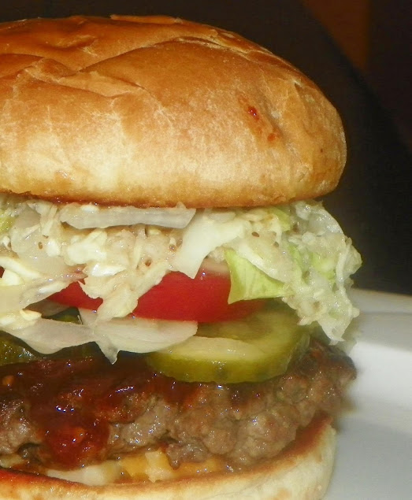

Cheeseburger Recipe
Home

Description
This delicious cheeseburger recipe resembles the perfectly curated
"Texas Roadhouse" cheeseburger. It is salty, juicy, and sure to be enjoyed by all.
Ingredients
- Beef chuck, freshly ground and loose pack
- Bbq sauce of choice
- Vegtable oil
- Hamburger buns
- American cheese
- Sweet onion
- Dill pickle slices
Steps
- Fluff the freshly ground beef chuck
- Lightly salt and pepper your beef and fluff again
- Divide your meat into four equal portions
- Make your pattys
- Heat your electric skillet to 400 degrees
- Add oil and swish so the bottom of the skillet is covered
- Carefully transfer the pattys to the skillet
- Flatten the patties with a spatula
- Cook for 4-5 minutes, then flip once nice and brown
- Cook for an additonal 4 minutes
- Remove the pattys
- Brush with barbeque sauce and add toppings
- >Put on the buns, and enjoy! Can serve with fries.